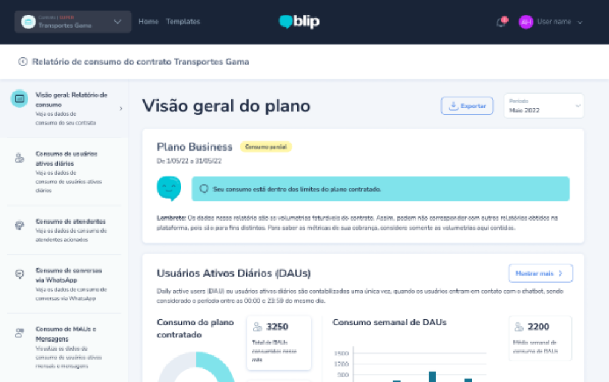
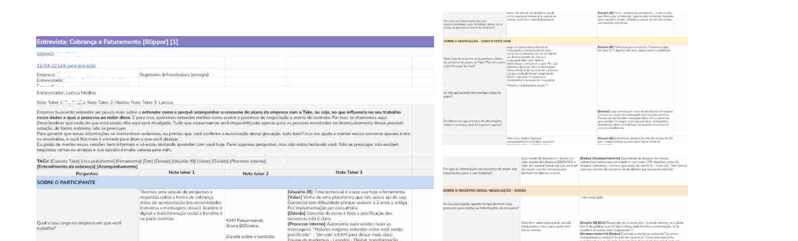
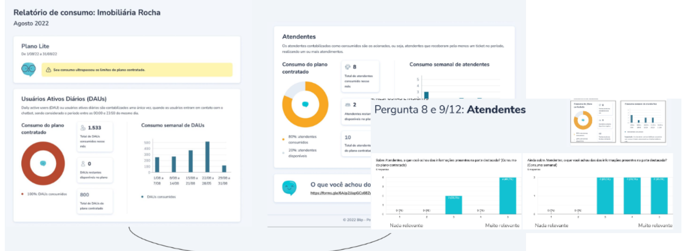
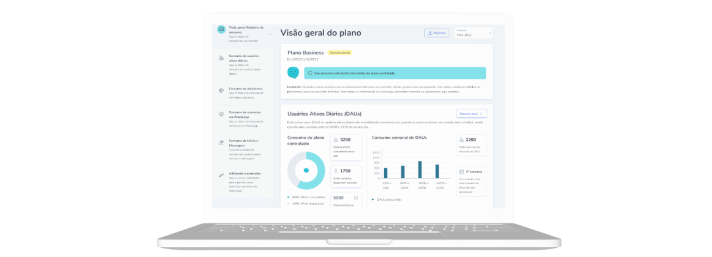
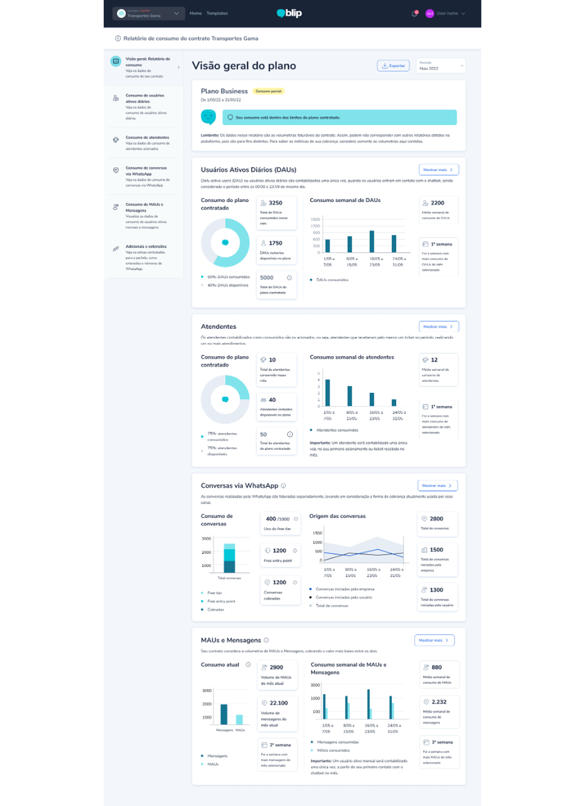

3.500%
x
Case Study
How turning fragmented SaaS usage data into a clearer interface helped teams reduce operational overhead.

x
x
x
Context & Challenge
Users had to piece together information from multiple areas to understand what was happening. The original experience presented usage and billing information in a fragmented, hard-to-scan way. The design needed to support clarity and confidence.
I started by investigating how users were using the metrics that were available at the time through interviews, consolidating them in a Empathy Map and Point of View.
Research and ideation
Internal investigation resulted in a service blueprint mapping most problematic billing operations
With 5 external clients, I mapped the most common problems regarding usage comprehension
x
x

Product launch concept
A visual exploration of launch messaging and visual hierarchy in a modern product experience.
Key insight: Even custom workflows share common baseline structures. A standard Agent Template Library could reduce friction without removing flexibility.
Testing & Iteration
I ran two rounds of qualitative testing with internal staff and hotel clients. The clearest pain points were confusion around field names, hidden descriptions, and misunderstood conditional logic such as AND vs. OR.

Outcome


Guided the user toward the most relevant billing and usage information first.
Made the experience more trustworthy for frequent use and fast review.
Clients with lower data maturity were more likely to still struggle with understanding the billing model — signaling this wasnt a one-and-done problem.